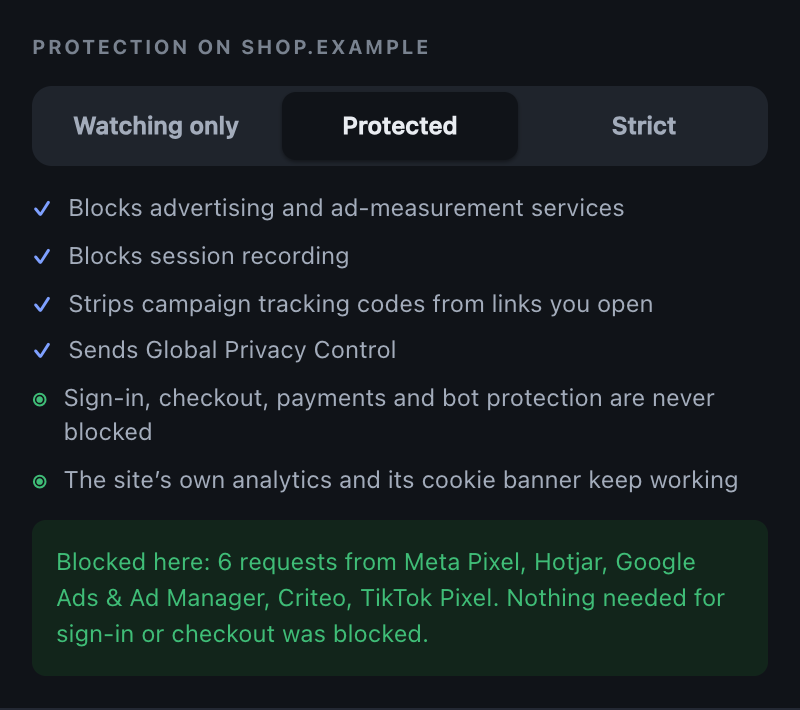
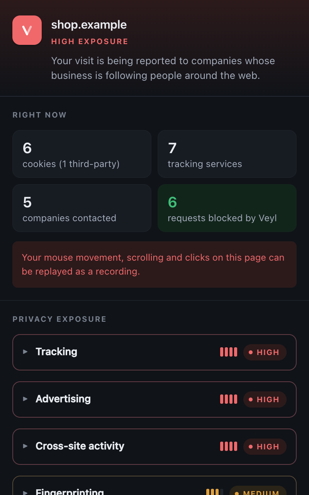
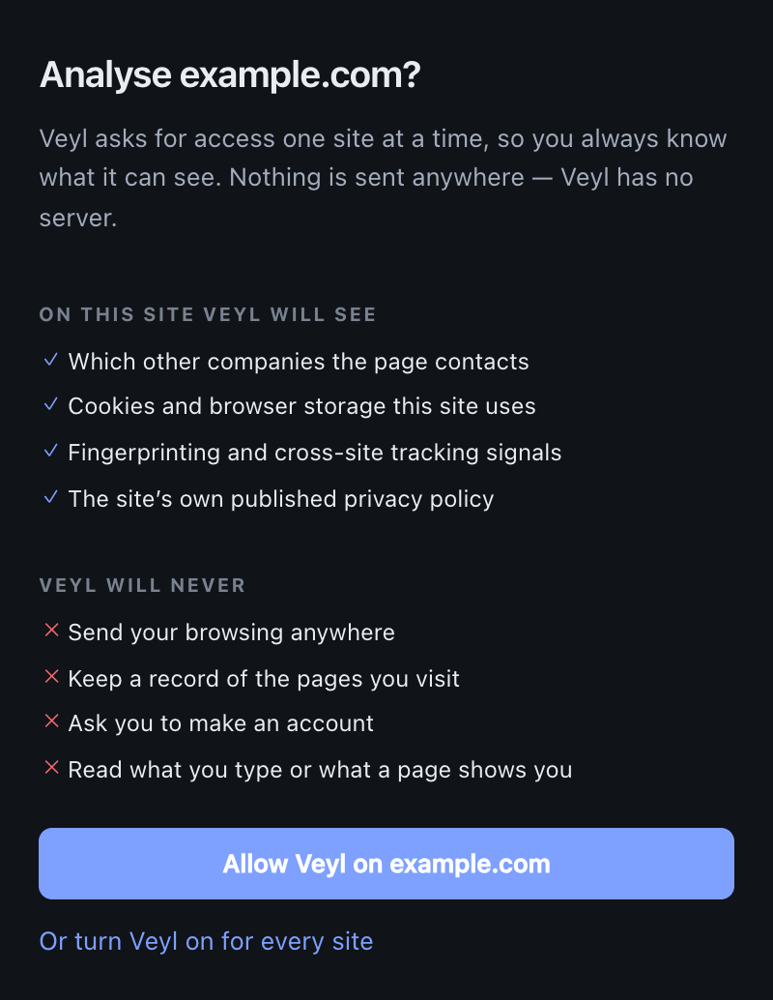
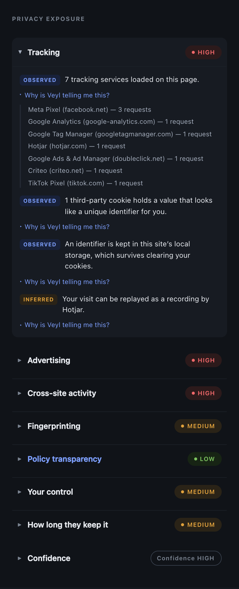
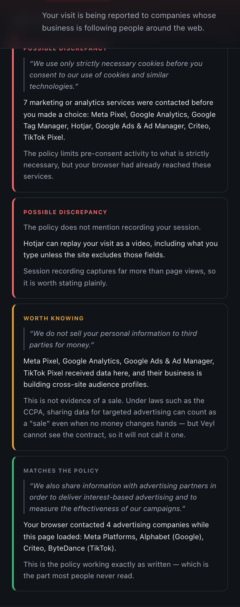
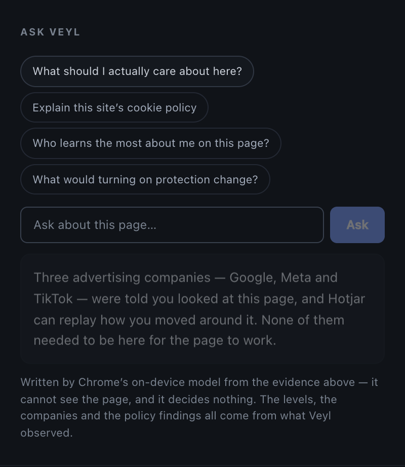

A privacy agent for the web
What is this website learning about you?
You shouldn't need to understand ad tech, cookie classifications or a nine-thousand-word policy to answer that. Veyl watches what a site actually does, reads what it says it does, and reports where the two disagree.
On the Chrome Web Store · Free · No account · MIT licensed



Sent to our servers
None
There is no server. One outbound request exists, and it fetches the policy of the site you are already on.
Sites readable at install
0
You grant access one site at a time. Chrome enforces that boundary, not our good intentions.
Browsing history stored
None
A visit lives in memory and is destroyed when the tab closes. No domains, no hashes of domains.
Analytics in the code
0
No telemetry, no crash reporting, and no setting that would turn any of it on.
How it works
Three different truths,plainly reported.
Most tools tell you one of them. The gap between them is the interesting part.
01 — Observed
What the site actually does
Every company your browser contacts, every cookie and how long it lasts, what is held in browser storage, and which browser APIs associated with fingerprinting were called.
Each dimension gets a level and, underneath it, the evidence that produced it — down to which domain made how many requests, and whether it happened before you were asked.

02 — Declared
What the site says it does
The privacy policy and, where one exists, the separate cookie policy — which is usually where the answers people actually want are kept. Your browser fetches them; they are read on your device and never uploaded.
Out comes a set of checkable claims, each keeping the sentence it came from, so you can check Veyl's reading against the original.

03 — Answered
In your own words
Ask what the cookie policy actually means, or who learns the most about you here. Chrome runs the model on your machine, so the question never leaves it.
The model is shown a summary of the findings already on screen — never the page address, never the page content. It phrases evidence; it decides nothing.

What it won't say
No scoreout of a hundred.
A number like 62/100 looks authoritative and hides how much of the picture was visible. Veyl reports a level per dimension and states its confidence separately. Two of these are doing careful work.
Veyl was watching and saw nothing. Not the same as proving nothing happened.
A little measurement, and nothing that follows you between websites.
The site learns more about you than it needs in order to work.
Your visit is reported to companies whose business is following people around the web.
Veyl could not look, or cannot establish it. Not a quiet way of saying “low”.
The limit of the instrument
Veyl will tell you that advertising trackers loaded, and that the policy permits sharing with advertising partners. It will not tell you the site sold your data.
That turns on contracts no browser extension can see. So Veyl says so, and keeps the question on a permanent list of things it cannot answer.
The awkward question
What does the privacy tooldo with your data?
Nothing leaves the device — not as a promise, as a property of the build. Grep the source
for fetch( and there is exactly one result.
What it does
- Requests no website access at install — you allow one site at a time
- Holds a visit in memory and destroys it when the tab closes
- Blocks advertising and session recording, never sign-in, payments or bot protection
- Answers questions with Chrome's on-device model, where your browser provides one
- Publishes its scoring method, tracker data and privacy boundary for anyone to check
What it never does
- Send your browsing anywhere — there is no server to send it to
- Keep a list of the sites you have visited, or hashes of them
- Record a cookie's value; the evidence structure has no field for one
- Contain analytics, crash reporting or telemetry of any kind
- Ask you to make an account
Access
It asks for nothing when you install it
Chrome's install prompt is the moment a privacy product either earns trust or loses it, so Veyl requests no host access at all. You allow one site at a time, in context, with the site named — and you can withdraw it at any point.
Verified
This page makes no third-party requests. The fonts are served from this origin rather than a CDN, there is no analytics and there are no embeds. Point Veyl at it and it finds nothing — which is the only demonstration worth making.
Open any website.Find out what it already knows.
Free and open source under the MIT licence. Built to be checked rather than believed — the evidence schema, the scoring method and the tracker data are all published.